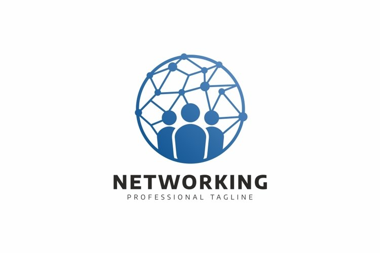

CompTIA A+
CompTIA A+ is the industry standard for establishing a career in IT. CompTIA A+ certified professionals are
proven problem solvers. They support today’s core technologies from security to networking to virtualization
and more. CompTIA A+ is the industry standard for launching IT careers into today’s digital world.
CompTIA A+ is the only industry recognized credential with performance testing to prove pros can think on
their feet to perform critical IT support tasks. It is trusted by employers around the world to identify the
go-to person in endpoint management & technical support roles. CompTIA A+ appears in more tech support
job listings than any other IT credential.
The CompTIA A+ Core Series requires candidates to pass two exams: Core 1 (220-1101) and Core 2 (220-1102)
covering the following new content, emphasizing the technologies and skills IT pros need to support a hybrid
workforce.
- Increased reliance on SaaS applications for remote work
- More on troubleshooting and how to remotely diagnose and correct common software, hardware, or
connectivity problems
- Changing core technologies from cloud virtualization and IoT device security to data management and
scripting
- Multiple operating systems now encountered by technicians on a regular basis, including the major
systems, their use cases, and how to keep them running properly
- Reflects the changing nature of the job role, where many tasks are sent to specialized providers as
certified personnel need to assess whether it’s best to fix something on site, or to save time and money
by sending proprietary technologies directly to vendors
 Hardware
Hardware
Identifying, using and connecting hardware components and devices, including the broad knowledge about different devices that is now necessary to support the remote workforce
 Operating Systems
Operating Systems
Install and support Windows OS including command line and client support, system configuration imaging and troubleshooting for Mac OS, Chrome OS, Android and Linux OS

Networking
Explain types of networks and connections including TCP/IP, WIFI and SOHO
 Troubleshooting
Troubleshooting
Troubleshoot real-world device and network issues quickly and efficiently
 Security
Security
Identify and protect against security vulnerabilities for devices and their network connections